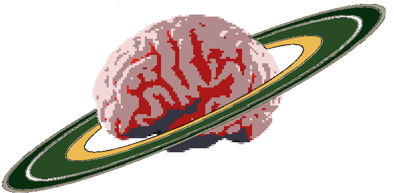

My Dream Journal
Since 2016, I have been recording my dreams in a single Google doc. Entries used to be much more frequent, but nowadays I tend to only enter about one a week. Throughout the years though, the document has grown to push 200 pages. Plus, it's fun to share strange stories with my friends. A great conversation starter is to walk into a room and force your roommates or friends or parents or strangers to listen to the dream you had last night! |
 |